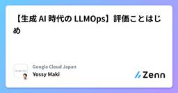
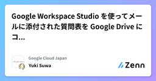
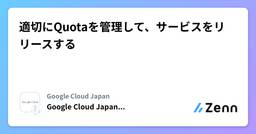
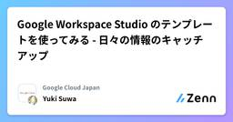
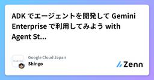
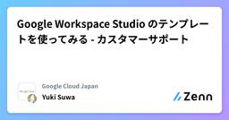
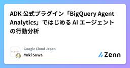
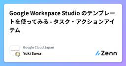

Google Cloud Japanのフィード
https://zenn.dev/p/google_cloud_jp
Google Cloud Japan のエンジニアを中心に情報発信をしている Publication です。Google Cloud サービスの技術情報を中心に公開しています。各記事の内容は個人の意見であり、企業を代表するものではございません。
フィード

【生成 AI 時代の LLMOps】評価ことはじめ
Google Cloud Japanのフィード
はじめにいよいよ年の瀬ですが、2025年は皆さんにとってどのような年でしたでしょうか。LLM、生成 AI という近年の技術革新の中、今年はビジネスへの実装を意識した議論が多かったように個人的には思います。そこで今一度、評価 について概要をまとめ、皆様の来年の取り組みの一助となればと思っています。これまで、【生成 AI 時代の LLMOps】のシリーズでプロンプト管理編、モデルマイグレーション編を扱ってきました。今回は LLMOps でも重要な要素、評価 について取り扱います。 評価とはまずみなさんは評価という言葉をどのような文脈で目にしますか。映像作品の評価、商品の評価、...
12時間前

Google Workspace Studio を使ってメールに添付された質問表を Google Drive にコピーする
Google Cloud Japanのフィード
はじめにGoogle Workspace Studio (以下、Workspace Studio) は Google Workspace で使える、Gemini が搭載されたワークフローを自動化するサービスです。基本的なコンセプトやユースケースのイメージについては下記のブログを書きましたのでご覧ください。https://zenn.dev/google_cloud_jp/articles/google-workspace-flows-getting-startedWorkstace Studio では「Gmail に添付ファイル付きのメールが届いたとき」というトリガーが使えます。...
1日前

適切にQuotaを管理して、サービスをリリースする
Google Cloud Japanのフィード
https://www.youtube.com/watch?v=vxhZzcRYkmgこのブログは Google Cloud Japan Advent Calendar 2025 10日目の記事です。開発者の皆さん、こんにちは。冒頭の歌にあるような経験、Google Cloud を使っていて遭遇したことはありませんか？機能開発もテストも完璧、デプロイパイプラインも整備した。さあリリースだ！という段になって、Google Cloud の Quota（割り当て） 上限に引っかかり、サービスが起動しない、あるいはスケールしないという悲劇。今回は、そんな悲しい事故を防ぐために、Goog...
2日前

Google Workspace Studio のテンプレートを使ってみる - 日々の情報のキャッチアップ
Google Cloud Japanのフィード
はじめにGoogle Workspace Studio (以下、Workspace Studio) は Google Workspace で使える、Gemini が搭載されたワークフローを自動化するサービスです。基本的なコンセプトやユースケースのイメージについては下記のブログを書きましたのでご覧ください。https://zenn.dev/google_cloud_jp/articles/google-workspace-flows-getting-startedWorkspace Studio には Google からデフォルトで提供しているテンプレートがあり、よくあるユースケ...
3日前

ADK でエージェントを開発して Gemini Enterprise で利用してみよう with Agent Starter Pack 1
1
Google Cloud Japanのフィード
ADK によるカスタムエージェントを Gemini Enterprise で利用可能になりました！Gemini Enterprise は、AI エージェントを動作させる統合プラットフォームとして、Google Cloud から 2025年10月9日に登場しました。Gemini Enterprise では、Google が用意した Deep Research 等のエージェントに加え、ユーザーの業務に合わせた独自のカスタムエージェントも登録して利用できるようになりました。カスタムエージェントを開発するには、Gemini Enterprise 上でノーコード開発できる Agent De...
3日前

Google Workspace Studio のテンプレートを使ってみる - カスタマーサポート
Google Cloud Japanのフィード
はじめにGoogle Workspace Studio (以下、Workspace Studio) は Google Workspace で使える、Gemini が搭載されたワークフローを自動化するサービスです。基本的なコンセプトやユースケースのイメージについては下記のブログを書きましたのでご覧ください。https://zenn.dev/google_cloud_jp/articles/google-workspace-flows-getting-startedWorkspace Studio には Google からデフォルトで提供しているテンプレートがあり、よくあるユースケ...
4日前

ADK 公式プラグイン「BigQuery Agent Analytics」ではじめる AI エージェントの行動分析
Google Cloud Japanのフィード
はじめにAI エージェントを開発・運用する中で、「ユーザーはどの機能をよく使っているのだろう？」「処理に時間がかかっている箇所はどこだろう？」「エラーの発生率は？」といった疑問を持つことは少なくありません。エージェントの品質を継続的に向上させるためには、これらの利用状況をデータに基づいて分析することが不可欠です。しかし、そのための分析基盤を自前で構築するのは手間がかかります。そんな課題を解決するのが、Google が提供する Agent Development Kit (ADK) 向けの公式プラグイン 「BigQuery Agent Analytics」 です。2025 年 11...
6日前

Google Workspace Studio のテンプレートを使ってみる - タスク・アクションアイテム 1
Google Cloud Japanのフィード
はじめにGoogle Workspace Studio (以下、Workspace Studio) は Google Workspace で使える、Gemini が搭載されたワークフローを自動化するサービスです。基本的なコンセプトやユースケースのイメージについては下記のブログを書きましたのでご覧ください。https://zenn.dev/google_cloud_jp/articles/google-workspace-flows-getting-startedWorkspace Studio には Google からデフォルトで提供しているテンプレートがあり、よくあるユースケ...
7日前

Cloud Run アプリのパケットキャプチャをしよう
Google Cloud Japanのフィード
こんにちは、Cloud Support の Rnrn です。去年はアドベントカレンダー(物理) を買うか悩んでいるうちに冬が終わった 私ですが、11 月 30 日にダメ元で店頭に立ち寄ったところ 1 個だけ残っていたので今年はついにチョコレートのアドベントカレンダーを買いました。今日はナッツプラリネでした🫒今回の記事では PCAP サイドカー (pcap sidecar) による、 Cloud Run にデプロイしたアプリケーションのパケットキャプチャについてご紹介します。3 行でまとめると・Cloud Run アプリケーションの外向き通信が急に失敗し始めた時トラブルシューティング...
8日前

Gemini 3 Pro 到来：エージェント時代の幕開けと Gemini 2.5 からの飛躍的進化
Google Cloud Japanのフィード
本記事は Google Cloud Japan Advent Calendar 2025 AI/ML 版 3 日目の記事です。2025年12月、Google は最新のフラッグシップモデル Gemini 3 Pro をプレビュー公開しました。本記事では、前モデルである Gemini 2.5 Pro との比較、技術的なアーキテクチャの変更点、そしてこの新しい「思考するモデル」を使いこなすためのプロンプトエンジニアリングについて詳しく解説します。 1. なぜ Gemini 3 Pro なのか？ (Gemini 2.5 との比較)Gemini 2.5 Pro は、現在も非常に優秀で安定...
9日前
データエージェントのためのメタデータカタログを目指すDataplexの機能アップデートご紹介！
Google Cloud Japanのフィード
この記事は Google Cloud Japan Advent Calendar 2025の4日目の記事です。 はじめにこんにちは。Google CloudカスタマーエンジニアのSoheiです。2025年の秋、Dataplex Universal Catalog (以下Dataplex) でも複数の機能アップデートがありました。その中から「データエージェントのためのメタデータカタログ」実現に関する機能をご紹介致します。※「データエージェント」というのは、ここでは「BigQueryを操作するAIエージェント」くらいの意味ですデータ分析者（人間）にとってテーブルや列の説明といった...
10日前
あっ停電 〜 そのとき、おうちKubernetesは
Google Cloud Japanのフィード
本記事は Google Cloud Japan Advent Calendar 2025 3 日目の記事です。Google Cloud Japan の RyuSA です。本記事は Cloud Native Days Winter 2025 の私の登壇 おうちKubernetes障害レポ をまとめた内容です。さて、みなさんのご家庭にも Kubernetes クラスタのひとつやふたつ、ありますよね？我が家でも合計 4 台の Node で構成されている、よくある構成のクラスタが元気に稼働しています。クラウドのようなマネージドな環境と異なり、自宅サーバーは停電や、掃除中にうっかり電源コー...
10日前
Geminiのレスポンスを爆速に！ Fastly AI Accelerator でセマンティック キャッシュを試してみた
Google Cloud Japanのフィード
Geminiのレスポンスを爆速に！ Fastly AI Accelerator でセマンティック キャッシュを試してみたこんにちは、Google Cloud カスタマーエンジニアの Dan です。日々お客様と生成 AI を活用したアプリケーションについて深く議論する中で、必ずと言っていいほど話題に上がる 3 つのトピックがあります。それは「レイテンシ（応答速度）」「コスト」そして「可用性（特にキャパシティ不足 [429 エラー] への対応）」です。Gemini は非常に高性能なモデルですが、複雑な推論を毎回行えば、それなりの時間とコストがかかります。「以前と同じような質問が来た...
11日前
Google Workspace Studio のテンプレートを使ってみる - メールの拡張
Google Cloud Japanのフィード
はじめにGoogle Workspace Studio (以下、Workspace Studio) は Google Workspace で使える、Gemini が搭載されたワークフローを自動化するサービスです。基本的なコンセプトやユースケースのイメージについては下記のブログを書きましたのでご覧ください。https://zenn.dev/google_cloud_jp/articles/google-workspace-flows-getting-startedWorkspace Studio には Google からデフォルトで提供しているテンプレートがあり、よくあるユースケ...
11日前
Google ADK for Go で作る AI エージェント
Google Cloud Japanのフィード
本記事は Google Cloud Japan Advent Calendar 2025 2 日目の記事です。12月といえばアドベントカレンダーの季節ですね！今年は AI や LLM (Large Language Model) 関連の技術が大きく飛躍した年でもありました。そしてついに！ Google から待望の Go 言語版 Agent Development Kit (ADK) が公開されました！Gopher の皆さん、お待たせしました。これで Go でネイティブに、かつ Google 推奨のプラクティスに沿って AI エージェントをバリバリ開発できます。今回は、この AD...
11日前
Kubernetes History Inspector(KHI)を使って入門する本格的なKubernetesの障害原因調査(RCA)
Google Cloud Japanのフィード
この記事は Google Cloud Japan Advent Calendar 2025の2日目の記事です。こんにちは。Google CloudのTechnical Solutions Engineerのカケルです。Google Cloud の技術サポートのチームでは、お客様のお問合せをもとに Google Kubernetes Engine(GKE) をはじめとする多様な Kubernetes 環境で発生した障害の原因調査をお手伝いすることがあります。 はじめに Kubernetes における障害原因調査(Root Cause Analysis,RCA)の難しさKu...
12日前
Google Workspace Studio ことはじめ - メールから自動でタスク作成も？Gemini で仕事が楽になる新サービス
Google Cloud Japanのフィード
はじめに「このメールの対応、後でやろうと思って忘れてた…」「毎月のレポート作成、地味に時間がかかって面倒…」Google Workspace (Gmail、Sheets、Docs など) を仕事で使っていると、こうした「ちょっと面倒な繰り返し作業」や「うっかり忘れがちなタスク」ってありますよね。この記事では、Google Workspace で使える新サービス 「Google Workspace Studio (旧 Google Workspace Flows)」 をご紹介します。プログラミングの知識がなくても、AI の力を使って日々の業務を自動化できる、まさに未来の働き方を...
12日前
Google Cloud Japan Advent Calendar 2025
Google Cloud Japanのフィード
Google Cloud Japan のメンバーが書く Advent Calendar 2025 です。去年とは違い、今回は通常版と、主に AI/ML に関連する版と、２種類の Advent Calendar を実施いたします！各部門の人達が是非紹介したい機能、いままで培ってきたノウハウ、知っておくと便利な Tips などを公開予定です。記事は毎日更新されていきますが、公開予定記事のトピックのみ最初に公開いたします！ぜひ毎日チェックしていただけると嬉しいです。この Advent Calendar は Google Cloud 製品などに関連するコミュニティが記載したテクニカル記事...
12日前
BigQueryの便利な機能を知ろう！コンソールツアー
Google Cloud Japanのフィード
Google Cloud アドベントカレンダー【通常版】 2025 の初日を務めます Customer Engineer の Shu Aiba です。このブログでは、データ分析のサービスである BigQuery の様々な機能をコンソールを見ながら紹介していきたいと思います。BigQuery のコンソール画面はたまに仕様が変わったり、ん？なんだこれは。みたいなメニューが追加されたりします。このブログでは、私の独断と偏見で、コンソールの気になるところを７個かいつまんで紹介します。はじめにお断りしておきますが、このブログを読むことで BigQuery の基本的な機能や使い方が完全にわかる...
13日前
Google Apps Script 新時代: 生成 AI と自然言語で拓く Google Workspace 自動化の未来
Google Cloud Japanのフィード
概要本稿では、Google Apps Script (GAS) を AI 時代の統合ハブとして再定義し、Model Context Protocol (MCP) や Agent2Agent (A2A)、そして Gemini CLI エコシステムとの融合によって実現する Google Workspace 自動化の最前線を紹介します。ローカルとクラウドをつなぐデータ統合 (RAG) や、AI が生成した GAS を安全に実行するサンドボックス技術、さらには最新の Google Antigravity 上での自律エージェント連携までを網羅。自然言語による指示だけで複雑なワークフローが自...
13日前